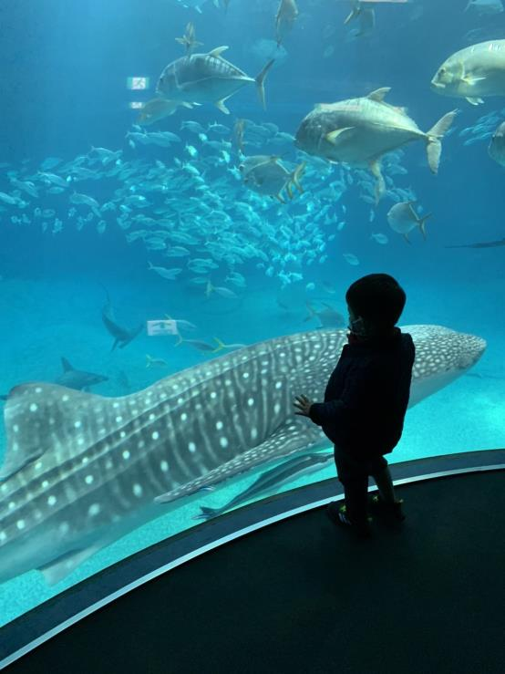
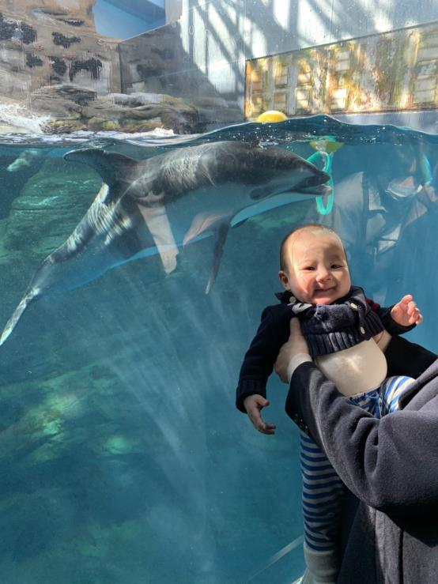
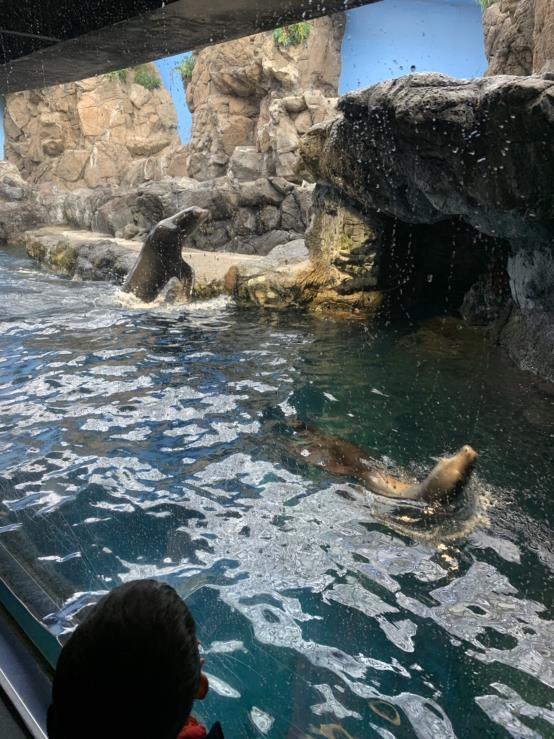
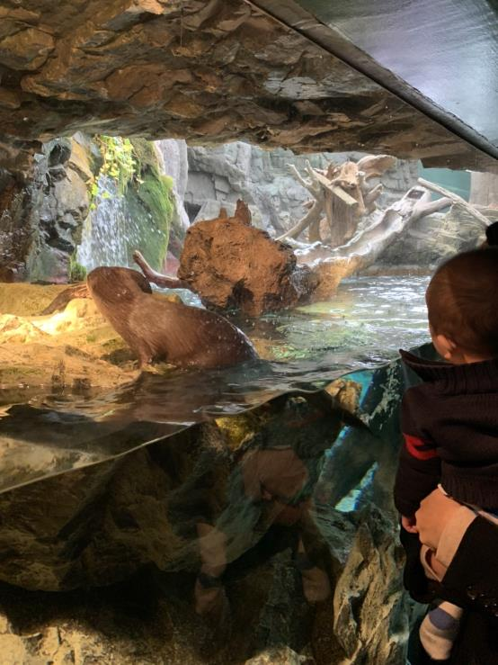

海遊館
2022年1月22日
   8フロアー。職員さんが、エレベータまで案内してくれる。これで、京都水族館と同じ値段。とてもいい！
室内なので寒くないし、冬や雨の日はおすすめ
高速道路天王山IC降りてすぐ。枚方学研IC～門真JCT～東大阪JCT～天王山IC
館内は飲食禁止。昼前に到着したため、途中でお腹がすいてしまった。今度は、しっかり食べてから見始めた方がいい。
館内はベビーカーの貸し出しがなかった。抱っこひもとベビーカーあった方がいい。
直ぐ近くにフードコートがあるが、これといったものがない。結局、たこ焼きとケンタッキーを食べて、帰ってから食べた。